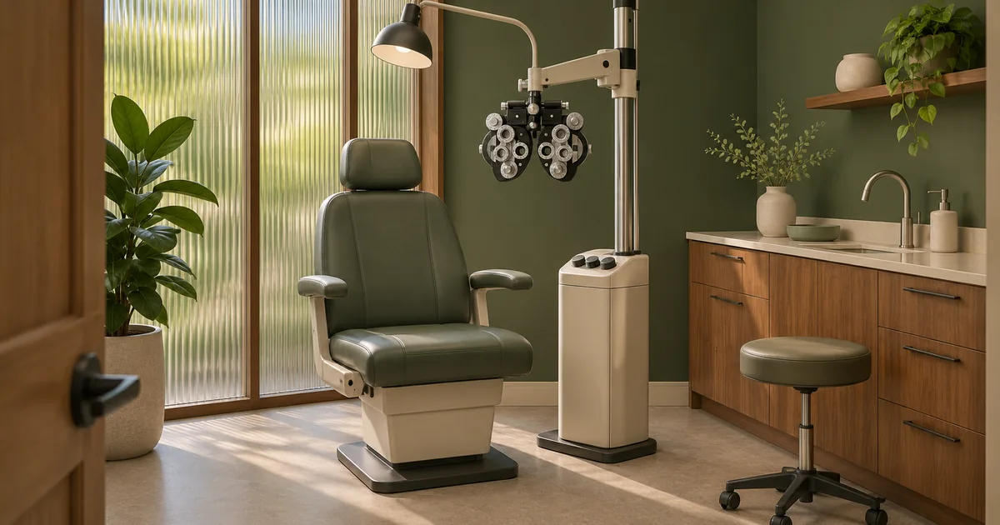

Published by ReviewRemoval. Authorship, sources and correction standards.
On this page
A patient searching for an eye exam sees a post about an eyewear return and assumes it describes your clinic’s billing. The post may be about a separate optical shop. ReviewRemoval helps Canadian clinics check whether a mix-up, harassment or a privacy issue gives them grounds to report a Google review.
Request a free clinic assessment
Make exam information easy to find
A prospective patient needs to know which location offers exams, where to book and how to confirm fees or coverage. Review those details on Google and on the booking page for each branch. If a review describes another business with a similar name, save the text that identifies it. If your practice also sells eyewear, genuine feedback about that experience may belong on your profile.

Give the front desk a simple triage plan
- Check which service the post describes. Does it name a different optical shop, clinic or location? Save the link and any public detail that identifies the business.
- Escalate threats or exposed patient information internally. Have the person responsible for privacy handle the record. Describe the concern generally when seeking help and avoid repeating sensitive details.
- Use a private channel for real complaints. Give people a way to raise a charge, appointment or service issue directly with the clinic. In a public reply, avoid confirming a patient relationship or discussing anyone’s care.
The front desk might write, “We take concerns about our office seriously. Please contact the clinic so we can discuss this privately.” The College of Optometrists of Ontario advises optometrists to safeguard patient information and avoid posting identifying information online. Follow the guidance that applies to your practice. Ontario optometry guidance on social media · Google Maps review policies.
Count enquiries, bookings and attended exams
Track those three numbers separately for each location. If requests stay steady but fewer people book, check wait times and how quickly calls are returned. If requests fall after inaccurate information appears, review what the profile says alongside any changes to hours, ads or appointment availability.
There’s also a practical reason to read the review itself. In a hypothetical clinic with exactly 212 stars across 50 ratings, removing one one-star rating brings the raw average from 4.24 to about 4.31. That difference is modest. The misleading claim that disappears with the post can be the larger factor for a patient deciding whether to call. See how count and starting score affect the average.
Ask ReviewRemoval to check the public post
Start with a public review link and a short, non-identifying description. We’ll assess the concern for free. If you approve the scope, we prepare the report and handle agreed follow-up through the appropriate process. Paid work costs CAD $50 upfront per approved review plus CAD $125 for each successful removal, before applicable taxes. See pricing in Canadian dollars · Google’s reporting and appeal process.
Need help with a specific review?
Share the public review link and describe the concern in general terms. Keep patient records and appointment details within the clinic.
Request a free clinic assessment